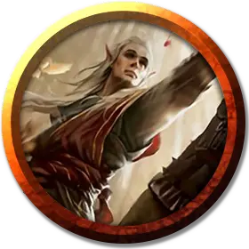

Монах Бессмертного Лотоса
Immortal Lotus Monk
Средний Гуманоид

Класс Доспеха 15 (защита без доспехов)
Хиты 65 (10к8 + 20)
Скорость 30 футов
| мод | спас | ||
|---|---|---|---|
| СИЛ | 12 | +1 | +1 |
| ЛОВ | 16 | +3 | +3 |
| ТЕЛ | 14 | +2 | +2 |
| мод | спас | ||
|---|---|---|---|
| ИНТ | 11 | +0 | +0 |
| МДР | 14 | +2 | +2 |
| ХАР | 10 | +0 | +0 |
Навыки Акробатика +6, Восприятие +5, Скрытность +6
Чувства пассивное Восприятие 15
Языки Общий
Опасность 5 (1800 опыта)
Бонус мастерства +3
Особенности
Защита без доспехов. Пока монах не носит ни доспехи, ни щит, к КД прибавляется его модификатор Мудрости.
Действия
Мультиатака. Монах совершает две атаки.
Удар силовым полем. Рукопашная атака оружием: +6 к попаданию, досягаемость 5 фт., одна цель. Попадание: 7 (1к8 + 3) урона силовым полем, и если целью является существо, оно должно преуспеть в спасброске Ловкости Сл 14, иначе оно становится сбитым с ног и падает ничком.
Дротик. Дальнобойная атака оружием: +6 к попаданию, дистанция 20/60 фт., одна цель. Попадание: 5 (1к4 + 3) колющий урон.